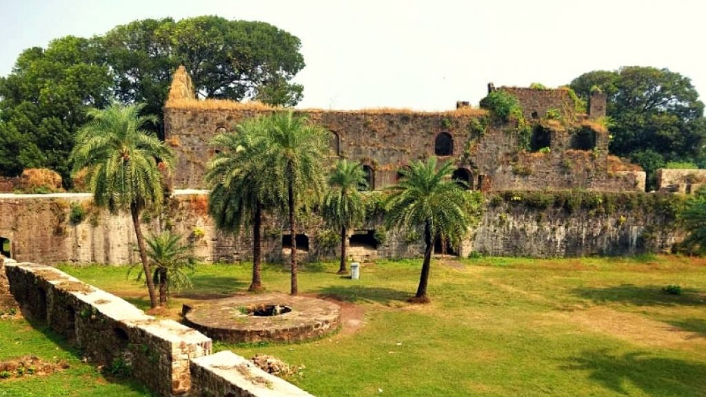
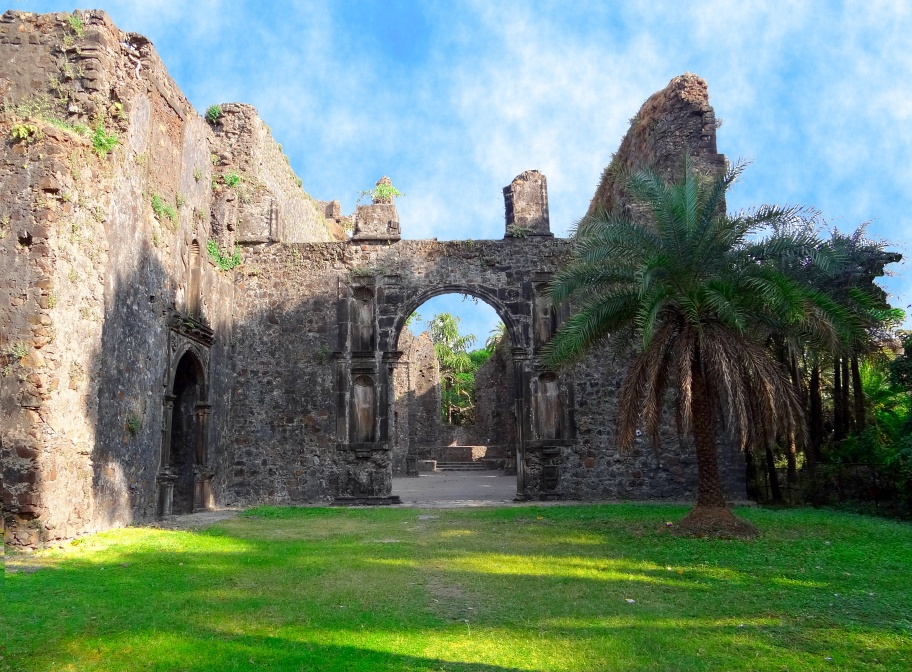
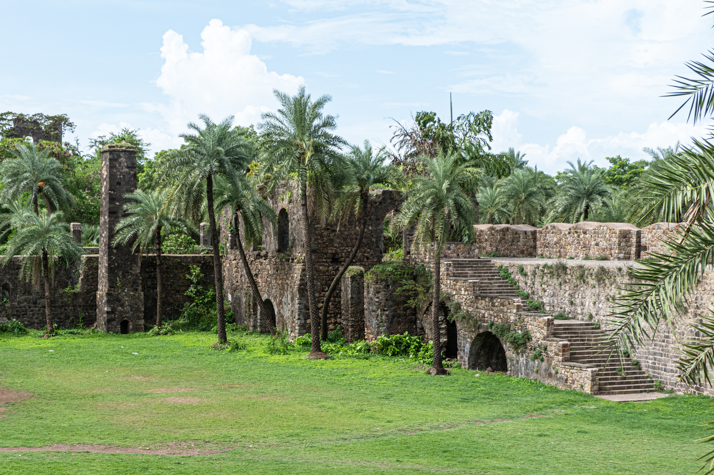

Fort Bassein, also known as the Vasai cha killa or Corte de Baçaim meaning "Court of Bassein" in Indo-Portuguese creole, is a ruined fort in the town of Vasai (Bassein) in the Palghar district of Konkan division of Maharashtra, India. The name "Bassein" is the anglicised version of the Portuguese Baçaim (the "ç" is pronounced as an "s" with the "m" being kept silent), which is itself a derivation of an apparently native name that may have a connection to the tribal Vasa-Konkani people[1] of the North Konkan region, extending from Mumbai (Bombay) to Damaon in "South Gujarat". The area was known as Bassein in modern history, it bears the alternate official name of Vasai today. Nayegaon's alternate official name is Naigaon The structure was formally christened as the Fort of St Sebastian in the Indo-Portuguese era. The fort is a monument of national importance and is protected by the Archaeological Survey of India.[2] The fort and the town are accessible via the Vasai Railway Station , and lies to the immediate north of the city of Mumbai.The Vasai Railway Station is on the Western Railway line .